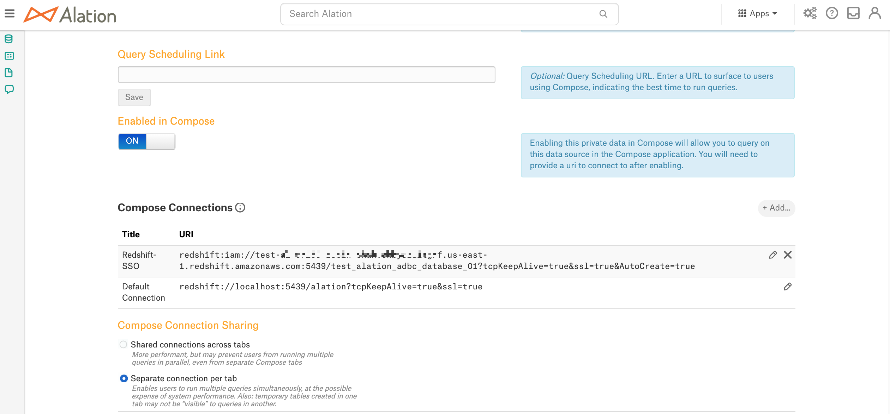
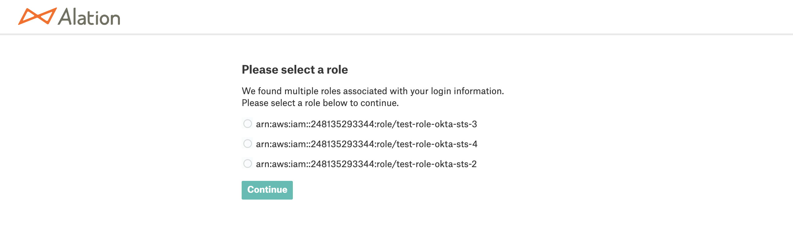
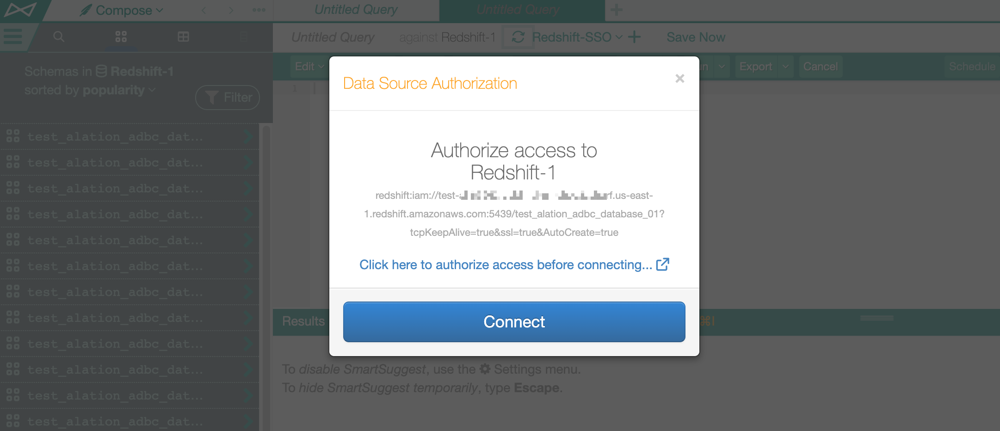
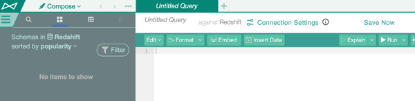

SSO Authentication for Amazon Redshift Data Source¶
Applies from release 2021.2
Perform this configuration to enable SSO from Compose for an Amazon Redshift data source.
SSO authentication should be configured for each specific data source. Multiple data sources can use one and the same AuthService configuration object if authentication goes through the same authentication application in the same IdP.
Step 1: Perform Configuration in Your IdP and in AWS IAM¶
Use the steps in Compose SSO for Amazon Data Sources: Create an Authentication Application to perform the preliminary configuration in your IdP and AWS IAM.
Step 2: Enable Alation AuthService¶
Note
Enabling of AuthService requires a redeployment of alation_conf and a restart of the Alation server. Alation recommends to schedule this configuration at a time when users are the least active in the Catalog. A redeployment of alation_conf and a restart will cause the Alation user interface to reload and users may lose their unsaved work.
From version 2022.2, AuthService is enabled by default. In versions before 2022.2, perform the following configuration on the Alation server to enable AuthService:
Use SSH to connect to your Alation host.
Enter the Alation shell.
sudo /etc/init.d/alation shell
Check if the AuthService is enabled on your instance by checking the current value of the alation_conf parameter
alation.authentication.service.enabled.alation_conf alation.authentication.service.enabledIf the current value is
True, the AuthService is already enabled. If it’sFalse, then change the value toTrue.Set the value to
True.alation_conf alation.authentication.service.enabled -s True
Deploy the configuration.
alation_action deploy_conf_allRestart Alation.
alation_action restart_alation
Stay in the Alation shell.
Step 3: Create an AuthService Configuration¶
After enabling AuthService, create an AuthService configuration object for the AWS IAM plugin. AuthService configuration objects are identified with the config_name property and store the redirect URL from the IdP.
This configuration is performed in the Alation Django shell.
To create a configuration object:
Prepare the following information:
Your AWS region
STS token duration value (in seconds)
Redirect URL from your IdP
Copy the code snippet below into an editor of your choice. Replace the placeholder values with real values:
'config_name':'<your_value>': a name for your configuration object'region':'<your_value>': your AWS region'sts_duration':'<your_value>': STS token duration, in seconds. You can provide a value from 900 seconds (15 min) up to the maximum of 43200 seconds (12 hours)'redirect_url':'<your_value>': the SSO login URL from the application in your IdP.
AuthClient('aws_iam').configure(operation='create', config={'config_name':'<your_value>', 'region':'<your_value>', 'sts_duration':'<your_value>', 'redirect_url':'<your_value>'})
From the Alation shell, enter the Django shell:
alation_django_shell
Call the AuthService client:
from auth_client.auth import Client as AuthClient
Check the status of the AWS IAM plugin of AuthService using the command below. It should return the status operational:
AuthClient('aws_iam').status_check()
Run the Python code you wrote in step 2.
Example:
AuthClient('aws_iam').configure(operation='create', config={'config_name':'sso_for_redshift', 'region':'us-east-1', 'sts_duration':'3600', 'redirect_url':'https://myokta.com/app/dev-888000_alationcomposessoforawssources_1/exkx5lhqq0emO4ILn0h7/sso/saml'})
The output should return SUCCESS:
{'status': True, 'code': 'SUCCESS', 'message': '{config_name=sso_for_redshift, method=aws_iam, sts_duration=3600, region=us-east-1, operation=create, redirect_url=https://myokta.com/app/dev-888000_alationcomposessoforawssources_1/exkx5lhqq0emO4ILn0h7/sso/saml}'}
The value of the
config_nameproperty will be required for the next step. Stay in the Django shell.
Step 4: Create a Compose Configuration¶
This step requires the data source ID. The data source ID can be obtained from the URL of the Data Source Catalog page: How to Find Data Source ID
You will need to create a Compose configuration object that links the AuthService configuration and your Amazon Redshift data source. From the Django shell, run the code below in the order the commands are given:
Create a Compose configuration object. In the code below, substitute the placeholder values:
<config_name>: the value of the
config_nameproperty of the AuthService configuration objects<ds_id>: the data source ID.
AuthServiceConfiguration.objects.create(ds=DataSource.objects.get(id=<ds_id>), method_name='aws_iam', config_name='<config_name>')
Select the object. Substitute the placeholder <ds_id> with your data source ID:
confs = AuthServiceConfiguration.objects.filter(ds_id=<ds_id>).all() c = confs[0]
Print the object information to the console:
c.jdbc_config
Set up the parameter
['auth_obj_to_jdbc_param_map']:c.jdbc_config['auth_obj_to_jdbc_param_map']={'AccessKeyID':'{AWSAccessKey}','SecretAccessKey':'{AWSSecretKey}','SessionToken':'{AWSSessionToken}'}
Set up the parameter
['jdbc_uri_enabler_patterns']:c.jdbc_config['jdbc_uri_enabler_patterns']=['redshift:iam:']
Note
Depending on your Amazon Redshift configuration, you may need to include other URI parameters into the
jdbc_uri_enabler_patternsproperty, for example:c.jdbc_config['jdbc_uri_enabler_patterns']=['tcpKeepAlive\\=true&ssl\\=true&AutoCreate\\=true']
Save the configuration:
c.save()View the saved configuration:
c.jdbc_config
Exit the Django shell:
exitExit the Alation shell:
exit
Example¶
In [1]: AuthServiceConfiguration.objects.create(ds=DataSource.objects.get(id=1), method_name='aws_iam', config_name='aws_iam1')
Out[1]: <AuthServiceConfiguration: AuthServiceConfiguration object>
In [2]: confs = AuthServiceConfiguration.objects.filter(ds_id=1).all()
In [3]: c = confs[0]
In [4]: c.jdbc_config
Out[4]:
{ 'auth_obj_to_jdbc_param_map': {},
'jdbc_uri_enabler_patterns': [],
'jdbc_uri_to_auth_service_args_map': {},
'require_strict_jdbc_uri_to_auth_service_args_map': False}
In [5]: c.jdbc_config['auth_obj_to_jdbc_param_map']={'AccessKeyID':'{AWSAccessKey}','SecretAccessKey':'{AWSSecretKey}','SessionToken':'{AWSSessionToken}'}
In [6]: c.jdbc_config['jdbc_uri_enabler_patterns']=['redshift:iam:']
In [7]: c.save()
In [8]: c.jdbc_config
Out[8]:
{ 'auth_obj_to_jdbc_param_map': {'AWSAccessKey': '{AWSAccessKey}',
'AWSSecretKey': '{AWSSecretKey}',
'AWSSessionToken': '{AWSSessionToken}'},
'jdbc_uri_enabler_patterns': ['redshift:iam:'],
'jdbc_uri_to_auth_service_args_map': {},
'require_strict_jdbc_uri_to_auth_service_args_map': False}
Step 5: Configure Amazon Redshift Data Source Settings in Alation¶
Next, complete the configuration in the Alation UI:
Log in to Alation UI as the Server Admin or as a user who has the Data Source Admin access to the Amazon Redshift data source.
Go to the Catalog page of your Redshift data source and open Settings > General Settings.
Scroll down to the Compose Connections section.
Click + Add on the right and add a new Compose connection. Give the Connection a meaningful name so that it can be recognized by users in the list of connections in Compose.
Add the
iam:prefix to the URI (required to enable authentication redirection from Compose to the IdP):Example:
redshift:iam://test-67263.chby8zuitgrf.us-east-1.redshift.amazonaws.com:5439/test_alation_adbc_database_01?tcpKeepAlive=true&ssl=true&AutoCreate=true
Note
Depending on your Amazon Redshift configuration and on the values you specified in the
c.jdbc_config['jdbc_uri_enabler_patterns']property, you may need to add other parameters to the connection, such as, for example, ClusterID and DbUser.ClusterID can be added to the Compose SSO URI configured in General Settings if it is the same for all users who will access the Cluster from Compose, for example:
redshift:iam://redshift.somecustomer.com:5439/analytics?ClusterID=prod-cluster-name®ion=us-east-1&ssl=true
If your Amazon Redshift configuration also requires the DbUser parameter, then each Compose user will need to create their own Compose connection based on the URI for SSO configured in General Settings. They will need to add the DbUser parameter and their Redshift username as the value, for example,
&DbUser=martythompson, with the ampersand symbol as the delimiter. As the admin, inform your Compose users that they will need to use their own Redshift username in the Compose connection when connecting to the Redshift data source using SSO.redshift:iam://redshift.somecustomer.com:5439/analytics?ClusterID=prod-cluster-name®ion=us-east-1&ssl=true&DbUser=martythompson
Refer to AWS documentation for more details on authentication parameters: Configure Authentication and SSL.
Selecting an AWS Role¶
In Compose, when users connect using an SSO-enabled connection, they will access the AWS resource with the AWS role returned for them in the SAML assertion response from the IdP. If a user is assigned multiple IAM roles and the IdP returns a list of roles in the response, users will be able to select one of their AWS roles from this list. Upon authorization in the IdP, Alation will display a page with the list of available roles:

Testing the Configuration¶
You can test with a user account that exists in IdP and has access to the AWS resource cataloged in Alation as the data source.
Test Connection in Compose¶
Log in to Alation as a user who has access to Amazon Redshift.
Go to Compose.
Depending on whether or not the DbUser parameter is required, either create a new Connection or select the SSO Connection you configured in the General Settings.
Note
If your Amazon Redshift configuration requires the DbUser parameter, then you need to add it to the SSO-enabled connection URI configured in data source Settings > General Settings > Compose Connections, for example:
redshift:iam://redshift.somecustomer.com:5439/analytics?ClusterID=prod-cluster-name®ion=us-east-1&ssl=true&DbUser=martythompson
Release 2021.4 and Older¶
Click the Plus icon next to the selected connection to begin creating a new Compose connection:
Specify a name in the Title field.
In the URI field, specify the connection URI that includes the DbUser parameter, if necessary, and the connecting user’s Amazon Redshift username as the value:
Click Add & Use to save the new connection.
If the DbUser parameter is not required, you can use the default SSO Compose connection configured in Settings > General Settings > Compose Connections by selecting it from the Compose Connections list and then clicking the Reconnect icon:
In the connection dialog that should pop up, click the link Click here to authorize access before connecting. A new browser tab should open where you are redirected to the IdP login page:
Enter the IdP credentials to authenticate.
If the SAML assertion response returns multiple roles, you will see a Select Role screen allowing to select a role.
Select a role and click Continue. The tab will close and you should be authenticated in Compose.
Note
If the response only contains one role for the given user, the Select Role screen will not be displayed and you will be authorized in Compose after you enter your credentials on the login form.
If authenticated successfully, run a query. Subsequent queries in this session should not require any authentication until the STS token expires.
{kind=link}
{kind=link}
{kind=link}
Releases 2022.1 and Newer¶
Click the Connection Settings link to open the Connection Settings dialog.
From the Choose a Connection list, choose the connection that uses SSO enablers.
Open the Connect as list. It should have an option +Add New (SSO Login). This means that SSO enablers in the URI of the connection have been recognized by Compose.
Click +Add New (SSO Login). This should open your IdP login screen.
Log in with your IdP credentials. If the SAML assertion response returns multiple roles, you will see the select role screen allowing you to select a role. Select a role and click Continue. The tab will close and you will be authenticated in Compose.
{kind=link}
{kind=link}
Troubleshooting¶
If the token request fails, the UI will display an error and connection will not be established. See Troubleshoot SSO Authentication with Amazon Data Sources.
Test Profiling¶
This test applies if Dynamic Profiling is enabled for the Amazon Redshift data source:
In the Alation Catalog, open a catalog page of a column in your Redshift data source.
Click Run Profile. The Data Source Authorization dialog should pop up.
Use the SSO-enabled connection from the list of saved connections.
If there is no active STS token, a new browser tab should open where you will be redirected to the IdP login page. Enter the IdP credentials to authenticate.
If there is an active STS token, Alation will reuse this token to connect.
Upon authentication, you will be able to profile the column.
Test Data Upload¶
Similarly, you can test Data Upload:
Go to the Amazon Redshift data source page in the catalog.
On the upper right, click More, and then click Upload Data.
Try to test-upload a table: the authentication flow should be the same as described above in Test Profiling.